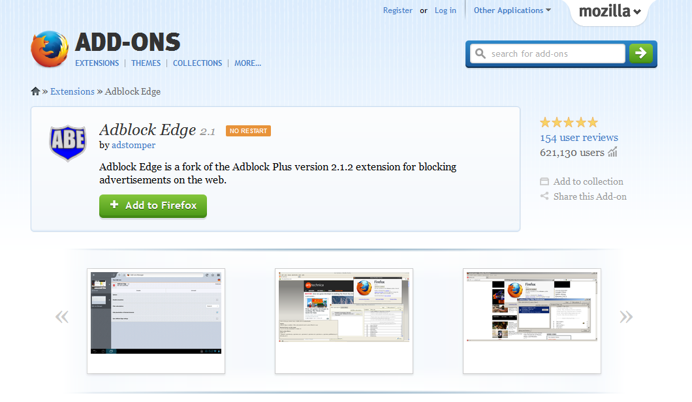

What is an adblocker?
An adblocker for Chrome or Firefox is an extension (or add-on) to your browser, which adds functionality to your browser so it can filter content. Adblockers itself have no functionality, in the sense that they do not block anything until it is "told" what to do. The so-called filterlists tell the adblocker what to block. These filterlists, are basically an extensive set of rules, which tell Adblock Edge what to block. The lists are created and maintained by a large online community.
How to block ads
While it can do so much more, the core function of Adblock Edge is to block annoying advertisements. These tutorials shows you how to block obtrusive ads in the different browsers.
How to block ads in Firefox
Adblock Edge for Firefox allows you to get rid of all annoying advertising, such as YouTube ads, Facebook ads, banners, pop-ups, and many others. If you do not have the Mozilla Firefox browser installed yet, please install it from Mozilla. If you want to block ads in a different browser please see the tutorials of installing Adblock Edge for Google Chrome and Opera.
The easiest way to add Adblock Edge to Firefox is to simply go to the Firefox installation page and click on the install button. A small screen will open on the left side of your browser, please click on "Allow". Then, another small screen will appear, where you have to click on "Install now". This will add Adblock Edge to your browser, and you will be protected against all obtrusive ads.
You can also install Adblock Edge through Mozilla Firefox. First, go to Adblock Edge in the Mozilla Add-ons section. Then, when you have opened the link, the following screen appears:
Please click on the big green button "Add to Firefox" to install Adblock Edge. Then, Firefox will ask you to "Install add-ons only from authors whom you trust." please confirm this by clicking on "Install". After confirming this, all annoying ads will be blocked.
A default filterlist will be installed the first time you
install Adblock Edge, based on the language of your browser. To
add other filtersubscriptions, read
more here. For more advanced options, like custom creating
filter, please go
here.
How to disable online tracking
There are many companies that collect data about your browsing habits across multiple websites. Even your browsing history is being examined and collected. Few users have no problems with these practices, because firms can better target ads tailored to their needs. However, there are hundreds of ad agencies that collect a loads of data about you and your browsing habits. If you do not want your online behavior being tracked by other companies, you can use Adblock Edge to disable all online tracking practices.
See How to disable social media button if you want to disable tracking from companies like Facebook and Google by removing the social media buttons from all websites.
Disable online tracking in Firefox
Online tracking can be disabled by adding a new filterlist subscription to Adblock Edge. The so-called "EasyPrivacy" filter will block all tracking requests made by websites. To add this list to Adblock Edge, simply click here, and click "Add subscription".
How to disable malware domains
Malware is currently one of the biggest online threats. Without the user knowing, bits of software can be installed on your hard-drive which will open up your computer for all kinds of cyber criminality. If your computer is infected by malware, your online banking credentials, credit card information, personal identification numbers, passwords etc. are all at risk. Malware can be installed on your computer through online ads, even the Google and Yahoo ads. You can use Adblock Edge to protect yourself against malware, Trojan horses, worms, spy- and adware and viruses.
Disable malware domains on Firefox
Disabling known malware domains is done by simply adding a new filterlist subscription to Adblock Edge. To add this list to Adblock Edge, simply click here, and click "Add subscription".
How to disable social media buttons
Almost every website today contains buttons of social media platforms, such as Facebook, Twitter, Google + and others. Even if you never click these buttons, your browsing data is still being transferred to these platforms in order to create a profile based on your browsing habits.
If you want to browse the web without being observed by the social media websites, Adblock Edge offers an easy solution to remove these buttons.
Disable social media buttons in Mozilla Firefox
If you want to block social media buttons in Firefox, just follow these easy steps: simply click here and choose "Add subscription".
How to block ads on YouTube
One of the greatest online annoyances is the 30-second commercials you have to sit through to see a 20-second movie on YouTube. Although people are complaining about this continuously, it is expected that this way of advertising will only grow in the near future. With Adblock Edge, it is very easy to block the video ads on Youtube. Just install Adblock Edge and all YouTube video ads will be blocked.
For Firefox, you can install Adblock Edge by visiting the Firefox installation page and clicking on the install button. Confirm the installation by clicking "Allow" on the first one, and "Install Now" on the second. Out of the box, Adblock Edge automatically blocks all those annoying video ads from YouTube.
How to block ads on Facebook
Getting tired of ads cluttering your Facebook timeline? Use Adblock Edge to block all Facebook ads. After installation, Adblock Edge automatically blocks all ads, including Facebook advertising.
Adblock Edge for Firefox can be installed by visiting the Firefox installation page and clicking on the install button. Firefox will ask you to confirm the installation of the add-on twice, so click on "Allow" and then "Install Now". After the installation process, Adblock Edge will be blocking all those annoying Facebook ads.